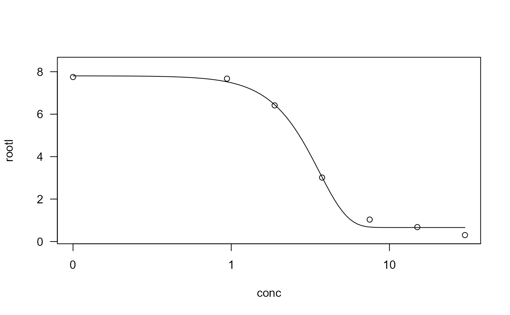
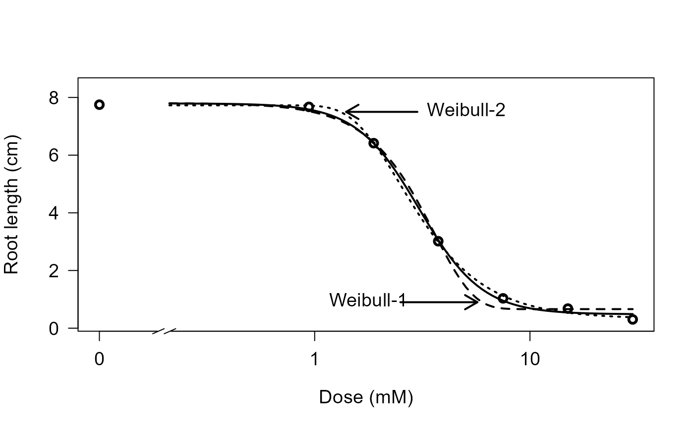

Effect of ferulic acid on growth of ryegrass
ryegrass.RdA single dose-response curve.
Usage
data(ryegrass)Format
A data frame with 24 observations on the following 2 variables.
- rootl
a numeric vector of root lengths
- conc
a numeric vector of concentrations of ferulic acid
Details
The data are part of a study to investigate the joint action of phenolic acids on root growth inhibition of perennial ryegrass (Lolium perenne L).
conc is the concentration of ferulic acid is in mM, and rootl is the root length
of perennial ryegrass measured in cm.
Source
Inderjit and J. C. Streibig, and M. Olofsdotter (2002) Joint action of phenolic acid mixtures and its significance in allelopathy research, Physiologia Plantarum, 114, 422–428, 2002.
Examples
library(drc)
## Displaying the data set
ryegrass
#> rootl conc
#> 1 7.5800000 0.00
#> 2 8.0000000 0.00
#> 3 8.3285714 0.00
#> 4 7.2500000 0.00
#> 5 7.3750000 0.00
#> 6 7.9625000 0.00
#> 7 8.3555556 0.94
#> 8 6.9142857 0.94
#> 9 7.7500000 0.94
#> 10 6.8714286 1.88
#> 11 6.4500000 1.88
#> 12 5.9222222 1.88
#> 13 1.9250000 3.75
#> 14 2.8857143 3.75
#> 15 4.2333333 3.75
#> 16 1.1875000 7.50
#> 17 0.8571429 7.50
#> 18 1.0571429 7.50
#> 19 0.6875000 15.00
#> 20 0.5250000 15.00
#> 21 0.8250000 15.00
#> 22 0.2500000 30.00
#> 23 0.2200000 30.00
#> 24 0.4400000 30.00
## Fitting a four-parameter Weibull model (type 2)
ryegrass.m1 <- drm(rootl ~ conc, data = ryegrass, fct = W2.4())
## Displaying a summary of the model fit
summary(ryegrass.m1)
#>
#> Model fitted: Weibull (type 2) (4 parms)
#>
#> Parameter estimates:
#>
#> Estimate Std. Error t-value p-value
#> b:(Intercept) -1.96791 0.29070 -6.7696 1.389e-06 ***
#> c:(Intercept) 0.32459 0.24902 1.3035 0.2072
#> d:(Intercept) 7.72630 0.17339 44.5594 < 2.2e-16 ***
#> e:(Intercept) 2.48765 0.14781 16.8304 2.829e-13 ***
#> ---
#> Signif. codes: 0 '***' 0.001 '**' 0.01 '*' 0.05 '.' 0.1 ' ' 1
#>
#> Residual standard error:
#>
#> 0.5144203 (20 degrees of freedom)
## Plotting the fitted curve together with the original data
plot(ryegrass.m1)
## Fitting a four-parameter Weibull model (type 1)
ryegrass.m2 <- drm(rootl ~ conc, data = ryegrass, fct = W1.4())
plot(ryegrass.m2)

## Fitting a four-parameter log-logistic model
## with user-defined parameter names
ryegrass.m3 <- drm(rootl ~ conc, data = ryegrass,
fct = LL.4(names = c("Slope", "Lower Limit", "Upper Limit", "ED50")))
summary(ryegrass.m3)
#>
#> Model fitted: Log-logistic (ED50 as parameter) (4 parms)
#>
#> Parameter estimates:
#>
#> Estimate Std. Error t-value p-value
#> Slope:(Intercept) 2.98222 0.46506 6.4125 2.960e-06 ***
#> Lower Limit:(Intercept) 0.48141 0.21219 2.2688 0.03451 *
#> Upper Limit:(Intercept) 7.79296 0.18857 41.3272 < 2.2e-16 ***
#> ED50:(Intercept) 3.05795 0.18573 16.4644 4.268e-13 ***
#> ---
#> Signif. codes: 0 '***' 0.001 '**' 0.01 '*' 0.05 '.' 0.1 ' ' 1
#>
#> Residual standard error:
#>
#> 0.5196256 (20 degrees of freedom)
## Comparing log-logistic and Weibull models
## (Figure 2 in Ritz (2009))
ryegrass.m0 <- drm(rootl ~ conc, data = ryegrass, fct = LL.4())
ryegrass.m1 <- drm(rootl ~ conc, data = ryegrass, fct = W1.4())
ryegrass.m2 <- drm(rootl ~ conc, data = ryegrass, fct = W2.4())
plot(ryegrass.m0, broken=TRUE, xlab="Dose (mM)", ylab="Root length (cm)", lwd=2,
cex=1.2, cex.axis=1.2, cex.lab=1.2)
plot(ryegrass.m1, add=TRUE, broken=TRUE, lty=2, lwd=2)
plot(ryegrass.m2, add=TRUE, broken=TRUE, lty=3, lwd=2)
arrows(3, 7.5, 1.4, 7.5, 0.15, lwd=2)
text(3,7.5, "Weibull-2", pos=4, cex=1.2)
arrows(2.5, 0.9, 5.7, 0.9, 0.15, lwd=2)
text(3,0.9, "Weibull-1", pos=2, cex=1.2)
